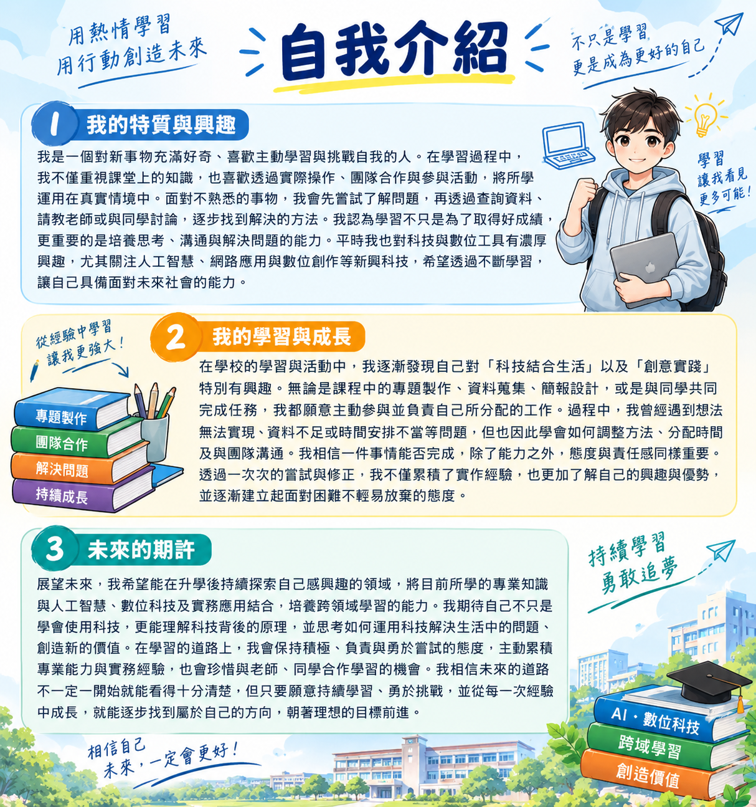

歡迎來到投高技職讚網站

生日及星座：10/1天秤座
畢業學校：南投高中
個人特色亮點：投高技職行銷
期待：接下來的日子，期待和大家一起創造精彩的故事！
我是一個對新事物充滿好奇、喜歡主動學習與挑戰自我的人。在學習過程中，我不僅重視課堂上的知識，也喜歡透過實際操作、團隊合作與參與活動，將所學運用在真實情境中。面對不熟悉的事物，我會先嘗試了解問題，再透過查詢資料、請教老師或與同學討論，逐步找到解決的方法。我認為學習不只是為了取得好成績，更重要的是培養思考、溝通與解決問題的能力。平時我也對科技與數位工具有濃厚興趣，尤其關注人工智慧、網路應用與數位創作等新興科技，希望透過不斷學習，讓自己具備面對未來社會的能力。
在學校的學習與活動中，我逐漸發現自己對「科技結合生活」以及「創意實踐」特別有興趣。無論是課程中的專題製作、資料蒐集、簡報設計，或是與同學共同完成任務，我都願意主動參與並負責自己所分配的工作。過程中，我曾經遇到想法無法實現、資料不足或時間安排不當等問題，但也因此學會如何調整方法、分配時間及與團隊溝通。我相信一件事情能否完成，除了能力之外，態度與責任感同樣重要。透過一次次的嘗試與修正，我不僅累積了實作經驗，也更加了解自己的興趣與優勢，並逐漸建立起面對困難不輕易放棄的態度。
展望未來，我希望能在升學後持續探索自己感興趣的領域，將目前所學的專業知識與人工智慧、數位科技及實務應用結合，培養跨領域學習的能力。我期待自己不只是學會使用科技，更能理解科技背後的原理，並思考如何運用科技解決生活中的問題、創造新的價值。在學習的道路上，我會保持積極、負責與勇於嘗試的態度，主動累積專業能力與實務經驗，也會珍惜與老師、同學合作學習的機會。我相信未來的道路不一定一開始就能看得十分清楚，但只要願意持續學習、勇於挑戰，並從每一次經驗中成長，就能逐步找到屬於自己的方向，朝著理想的目標前進。
